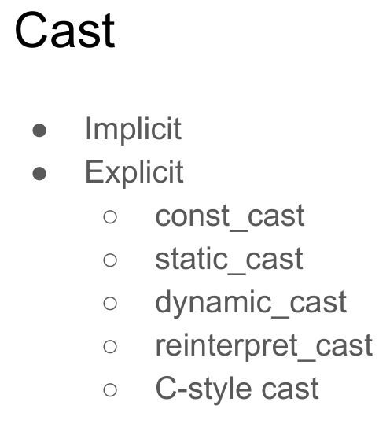
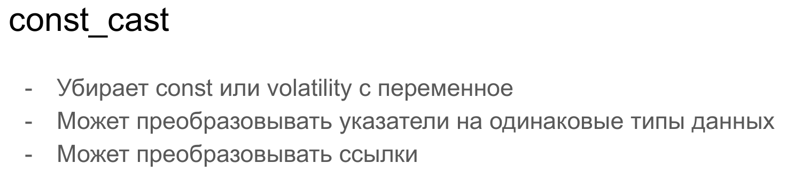
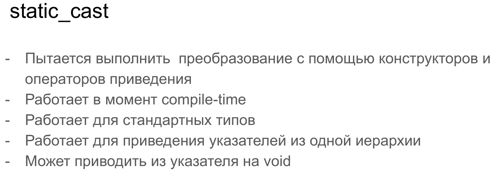
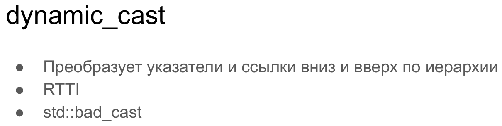
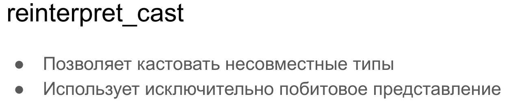
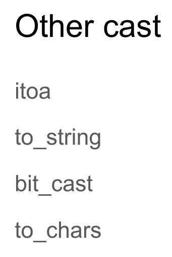

Приведения типов и CRTP
Функциональные объекты, захват данных и полиморфизм на этапе компиляции.
Cast, CRTP


int main() {
int a = 10;
const int* b = &a;
int* c = const_cast<int*>(b);
*c = 50;
std::cout << a;
}

dynamic_cast делает проверку типа во время выполнения (runtime) для полиморфных классов и безопасно приводит указатель/ссылку к нужному типу.
Когда нужен dynamic_cast
Когда у тебя есть базовый указатель, но нужно понять какой конкретный наследник внутри.


CRTP
CRTP (Curiously Recurring Template Pattern) — это идиома шаблонов в C++, при которой класс передаёт сам себя как параметр шаблона своему базовому классу.
То есть базовый класс становится шаблоном, а производный класс передаёт себя в этот шаблон.
template <typename Derived>
class Base {
public:
void interface() {
static_cast<Derived*>(this)->implementation();
}
};
class Derived : public Base<Derived> {
public:
void implementation() {
std::cout << "Derived implementation\n";
}
};